NetBeans IDE 安裝指南
在程式設計這個領域，會常常見到這組相對的名詞：SDK 與 IDE。
SDK 是 Software Development Kit 的簡稱，中文譯為「軟體開發套件」。SDK 供應程式工程師需要的工具指令與程式庫，提供一個最核心的開發環境，讓程式工程師只要用主控台 (例如 MS-DOS 模式) 與純文字編輯器 (例如記事本) 就能撰寫並產生程式。Java Technology 網站提供的 JDK 就是讓程式工程師開發 Java 的 SDK。
當然，只用主控台和純文字編輯器來開發程式，是件很沒有效率的事。因此我們會希望能有一個軟體，提供方便的操作環境讓我們使用。例如 NetBeans 就是這樣的一套軟體：
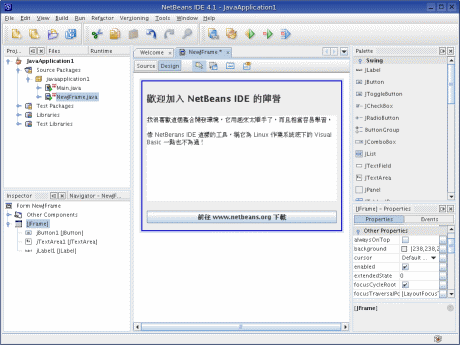
如畫面所示，左邊列出專案的所有檔案架構，中間是我正在設計的一個視窗介面，右邊可讓我設定視窗的樣式，上面的功能表與工具列可讓我管理專案並且測試這個程式。有了它，我就不用在 MS-DOS 模式輸入長串的指令來編譯我寫在記事本裡面的 Java 程式。
像這種為 SDK 整合出一個方便有效率的操作環境，就叫做IDE；Integrated Development Environment 的簡稱，中文譯為「整合開發環境」。
本章所要介紹的 NetBeans 就是專門針對 JDK 所提供的 IDE 軟體。
NetBeans IDE
為什麼要使用 NetBeans IDE 來開發 Java 程式？
首先，NetBeans IDE 提供強大的文字編輯器！它提供一般程式設計師最需要的語法突顯功能，能將不同程式指令結構以不同顏色標示，讓程式看起來更容易區分結構段落；提供程式樣板功能，能在程式碼中插入一整塊預先準備好基本的程式；支援 Insight 功能，能在你寫出一小段程式時，就彈出清單讓你選擇接下來可能要寫的程式；程式摺疊功能，能將某區段的程式摺起來，讓你隱藏無關緊要的程式，讓程式看起來更簡潔；支援輸出成 HTML 的功能，能將程式依語法突顯的色彩儲存在網頁檢視，連行號也忠實展現。
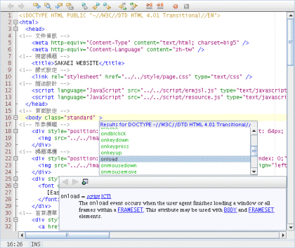
其次，NetBeans IDE 提供便利的編譯、測試環境，你只要使用工具列的按鈕，就能夠編譯原始碼，然後執行程式。支援專案管理功能，可同時展開多個專案來開發，然後獨立編譯、測試。
另外，NetBeans IDE 整合起來的功能很完整，你不需要自行再外掛模組，就可以進行 Java、Sevlet、HTML、JSP、XML、GUI 等程式開發工作。並且整合 Ant 與 JUnit 等功能，讓程式的部署與測試更有威力。
在 GUI 設計方面，可說是 NetBeans IDE 最出色的特點！GUI 是「圖形使用者介面」的意思，不過通常我們所謂 GUI 設計就是指「視窗設計」。使用 NetBeans IDE 來設計視窗介面是非常方便有效率的！你可以從元件盤拖曳各項元件如文字方塊、按鈕來配置視窗介面，然後從屬性視窗來修改元件特性或者加入事件，而物件檢視員可以讓你管理表單裡面建立的元件。特別是這些動作可以直接在視窗表單上按滑鼠右鍵，從彈出式目錄中挑選想要加入的元件，這讓視窗介面的設計工作變得很容易進行。
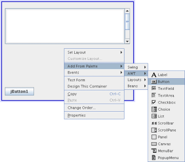
NetBeans IDE 在不同作業系統方面也有優勢，那就是 Windows 與 Linux 都有可以安裝的版本，降低平台轉換的問題。
當然，NetBeans IDE 也不是沒有缺點，例如：可以外掛的模組不夠豐富而且不實用、能整合進來的其它軟體很少、不支援 UML、有時候會小出搥，必須重新啟動來恢復正常。[1]
NetBeans IDE 是「最容易使用的專業開發工具」，初學者可以很容易上手，對老經驗的人其功能也很夠用。但「實際上並不是最強大的開發工具」，或許你也會想考慮 Eclipse 這套擴充性超強的軟體，或者是 JBuilder。
下載 NetBeans IDE
NetBeans IDE 官方網站的網址是：http://www.netbeans.org，你可以在這個網站的 Download 網頁下載。
這套軟體是免費的，同時它也獲得 SUN Microsystems 公司的支持，為 Java 官方主要推薦的開發工具。
你可以參考如下 NetBeans IDE 4.1 的檔名，確認是否下載正確： (依版本序號的不同檔名會有差異)
Windows
netbeans-4_1-windows.exe
Linux
netbeans-4_1-linux.bin
安裝 NetBeans IDE
Windows 版只要點兩下下載回來的安裝檔即可進入安裝過程。
Linux 版的話請開啟終端機模式，用指令將目錄切換到檔案所在處，輸入：
./netbeans-4_1-linux.bin
即可進入安裝程序。
由於 NetBeans IDE 在安裝過程中會檢查是否安裝了 JDK，因此必須設定好 JAVA_HOME 與 PATH 等環境變數。除此之外 NetBeans IDE 的安裝過程沒有什麼特別的設定，只要在安裝過程中一直按「下一步」就可以順利安裝完成。
但如果你希望對整個安裝過程能夠更了解，可繼續參考下面的內容。
步驟 1
請執行所下載的安裝檔案來展開安裝程序。
步驟 2
首先是歡迎畫面，請按「Next」進入下一個的安裝步驟。
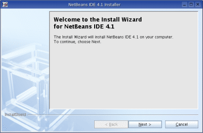
步驟 3
接著要求閱讀許可證協議：
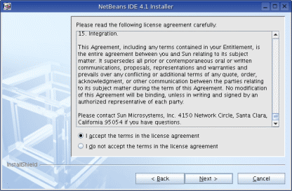
必須選擇 I accept the terms in the license agreement 表示「我接受許可證協議」，才能進行下一步的安裝步驟。
步驟 4
接下來請指定一個目錄來安裝 NetBeans IDE：
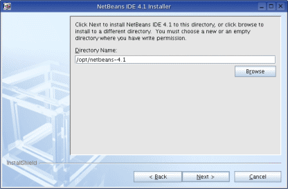
你可以按「Browse」來選擇安裝的目錄，完成後請按「Next」。
步驟 5
接著要求選擇所要使用的 JDK：
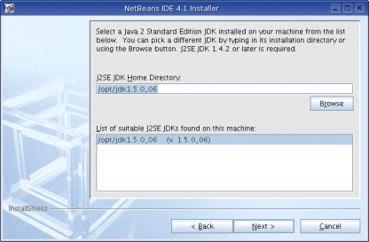
安裝程式會自動搜尋你電腦中最新的 JDK 讓你選擇，不過你也可以按「Browse」選擇其它版本的 JDK 所在目錄，然後在下方的列表中決定所要使用的 JDK 版本。
完成後請按「Next」進行下一個安裝步驟。
步驟 6
安裝程式會顯示你選擇的設定狀態，檢視無誤後請按「Next」開始安裝。
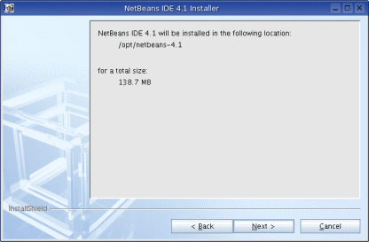
步驟 7
NetBeans IDE 已經開始安裝到你的電腦，請稍候數分鐘即可完成。
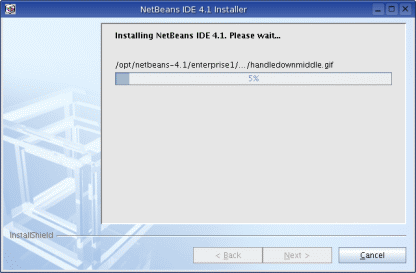
步驟 8
安裝動作結束後，請按「Finish」，NetBeans IDE 已經安裝在你的電腦裡了。
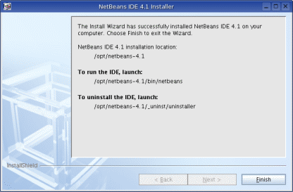
啟動 NetBeans IDE
使用 Windows 作業系統，可以在桌面找到 NetBeans IDE 的捷徑來執行。
使用 Linux 作業系統，請開啟終端機程式，然後輸入：
/opt/netbeans-4.1/bin/netbeans
相關問題
如果你在 Windows 作業系統使用舊版的 NetBeans IDE 4.0，會有一個字體上的問題，那就是開啟檔案視窗時，中文字會變成空格方塊：
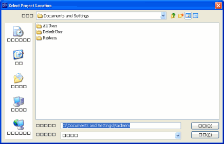
這真是醜死了，所以下面要介紹如何解決這個問題。[2]
步驟 1
到 NetBeans IDE 安裝目錄，然後在這裡找名稱為 etc 的資料夾，開啟後會看到檔名為 netbeans.conf 的檔案：
步驟 2
修改 netbeans.conf 檔案，然後在「netbeans_default_options」的最後面，加上「-fontsize 12」：
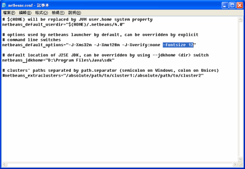
注意！-fontsize 12 的前面要有一個空白做為間隔。
步驟 3
寫好設定後，儲存檔案，然後重新執行 NetBeans IDE，就可以解決文字錯誤的問題：
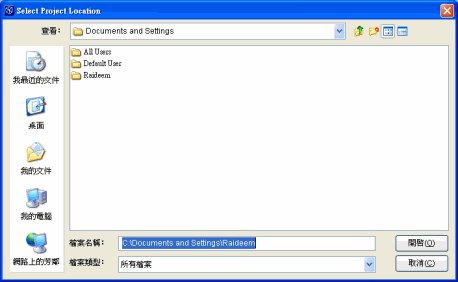